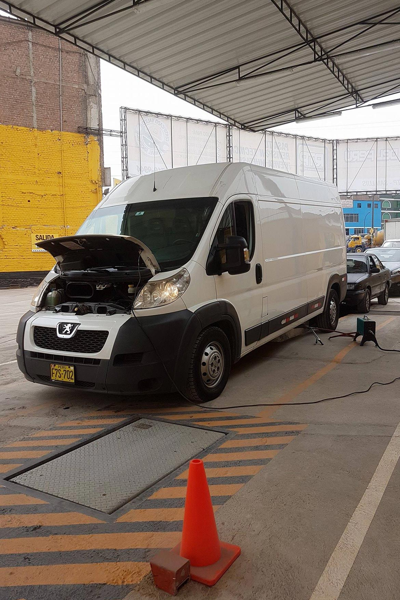

SEGUNDO PASO
Una vez llegado a la planta de Revisión Técnica Vehicular, el usuario deberá acercarse a la oficina de recepción en donde presentará los documentos obligatorios: Tarjeta de Propiedad, SOAT o CAT vigente, licencia de conducir y si fuera un vehículo a gas, presentar el Certificado Anual de GLP o GNV. Luego, se procede a efectuar el pago, con el cual se le abre el expediente de la revisión.TERCER PASO
Posteriormente, deberá dirigirse a la línea de inspección en donde se le realizará la revisión técnica correspondiente, en la cual, nuestros técnicos especializados le indicarán, las pautas a seguir en el proceso de cada una de las pruebas que se le realizarán a su vehículo.CUARTO PASO
Por último, deberá acercarse a la oficina, en donde se le entregará su certificado de Revisión Técnica Vehicular.Proceso de Inspección Técnica Vehicular
La Inspección Técnica Vehicular deberá efectuarse en forma continua dentro del local autorizado, empleando para ello una Línea de Inspección Técnica Vehicular con equipos especializados, de acuerdo al procedimiento establecido en el Manual de Inspecciones Técnicas Vehiculares y en la Tabla de Interpretación de defectos de Inspecciones Técnicas Vehiculares.
El proceso de Inspección Técnica Vehicular comprende las siguientes etapas
a. Registro y Verificación Documentaria.
b. Inspección visual
c. Inspección mecánica
La Inspección Técnica Vehicular debe realizarse sin desmontar piezas o elementos del vehículo y no se podrá vender repuestos ni realizar reparaciones a los vehículos que se presenten para la inspección técnica vehicular.
Obligaciones previas al proceso de Inspección Técnica Vehicular
El propietario o conductor del vehículo que se presente a la Inspección Técnica Vehicular se encuentra obligado a:
- Presentar la documentación señalada en el Reglamento Nacional de Inspecciones Técnicas Vehiculares y que se menciona en el apartado posterior de "Registro y verificación documentaria".
- Presentar el vehículo, motor y chasis limpios de modo tal que permita la revisión del vehículo.
- Presentar el vehículo con combustible suficiente para culminar el proceso de Inspección Técnica Vehicular.
- Presentar los neumáticos del vehículo con la presión especificada por el fabricante del mismo.
- Presentar las ruedas del vehículo con los pernos visibles.
- Presentar el vehículo con los dispositivos de seguridad inactivos.
- Presentar el vehículo circulado con tracción propia, a excepción de los vehículos de la Categoría O.
Registro y verificación documentaria
El Centro de Inspección Técnica Vehicular - CITV debe solicitar al propietario o conductor y verificar los siguientes documentos:
- Tarjeta de Propiedad o Tarjeta de Identificación Vehicular.
- Certificado vigente del Seguro Obligatorio de Accidentes de Tránsito (SOAT) o del Certificado Contra Accidentes de Tránsito (CAT).
- En el caso de vehículos habilitados para el servicio de transporte terrestre, certificado de habilitación vehicular o documento de formalización del vehículo, según corresponda a la modalidad del servicio que presta.
- Autorizaciones o permisos especiales de circulación en el caso de Vehículos Especiales.
- Informe de Inspección Técnica Vehicular, únicamente en caso de tratarse de una re-inspección Técnica Vehicular.
- Certificado de Inspección Técnica Vehicular anterior, salvo cuando se trate de la primera Inspección Técnica Vehicular.
De encontrarse conforme la documentación, se procederá a la Inspección Técnica Vehicular, mediante una inspección visual y mecánica del mismo.
Proceso de Inspección Técnica Vehicular
La Inspección Técnica Vehicular deberá efectuarse en forma continua dentro del local autorizado, empleando para ello una Línea de Inspección Técnica Vehicular con equipos especializados, de acuerdo al procedimiento establecido en el Manual de Inspecciones Técnicas Vehiculares y en la Tabla de Interpretación de defectos de Inspecciones Técnicas Vehiculares.- La inspección visual deberá realizarse verificando el estado de conservación de la carrocería, espejos, parabrisas, dispositivo limpiaparabrisas, la adecuada instalación de láminas retroreflectivas, dispositivo antiempotramiento o parachoques y demás componentes según el tipo de vehículo, de acuerdo a las exigencias técnicas establecidas en el Manual de Inspecciones Técnicas Vehiculares y el Reglamento Nacional de Vehículos.
- Debe verificarse la integridad estructural del chasis y vigas principales del vehículo, comprobando que se encuentren en buenas condiciones y no presenten desgaste por acción de la corrosión o fatiga de sus componentes.
- Debe verificarse los juegos que puedan existir en las ruedas, sistemas de dirección, suspensión, amortiguación y frenos, así como de los dispositivos de unión entre aquellos sistemas y el propio bastidor o chasis del vehículo.
- Debe verificar que la profundidad del dibujo de rodadura de los neumáticos del vehículo cumplan con las exigencias mínimas contempladas en el Reglamento Nacional de Vehículos.
- De acuerdo a la modalidad del servicio, verificar que los vehículos sometidos a la Inspección Técnica Vehicular, cumplan además con los requisitos específicos para el servicio exigidos por el Reglamento Nacional de Administración de Transportes, Reglamento Nacional de Vehículos, Reglamento Nacional de Tránsito, Reglamento de Transporte de Mercancías Peligrosas y demás normativa específica, según corresponda, lo cual estará especificado en el Manual de Inspecciones Técnicas Vehiculares.
Calificación de los Resultados
Si no se han encontrado defectos o si los defectos encontrados son calificados como leves entonces la inspección será considerada FAVORABLE.Si se encuentran defectos calificados como graves o muy graves la inspección será considerada DESFAVORABLE
LA INSPECCIÓN ES FAVORABLE
Si la revisión hubiera resultado favorable le devolverán la documentación de su vehículo y se le entregará un certificado de inspección técnica junto con una calcomanía que deberá ser colocada en el ángulo superior derecho de la luna delantera por su lado interior, para su fácil reconocimiento.Las calcomanías llevaran marcada mediante taladro la fecha de caducidad.
Los defectos leves que se indiquen en el certificado deberán corregirse antes de pasar la siguiente inspección.